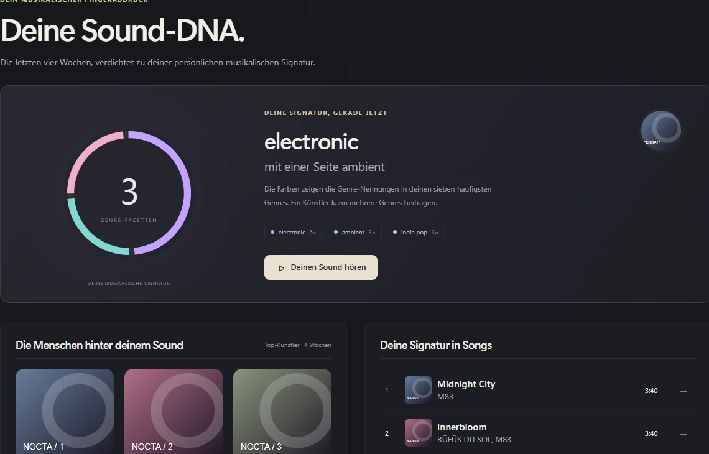
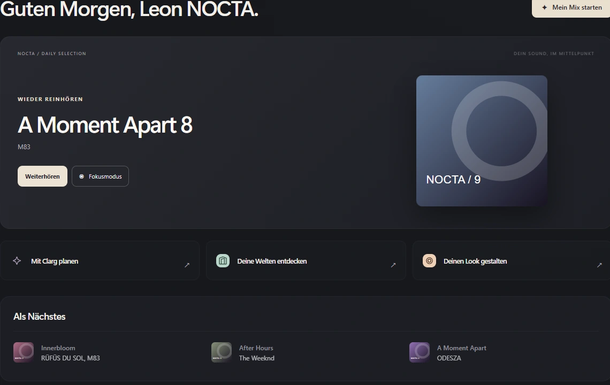
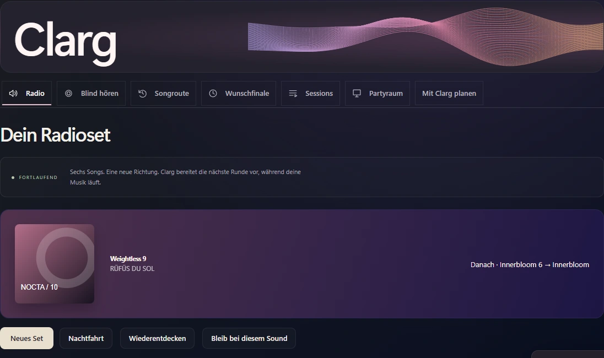
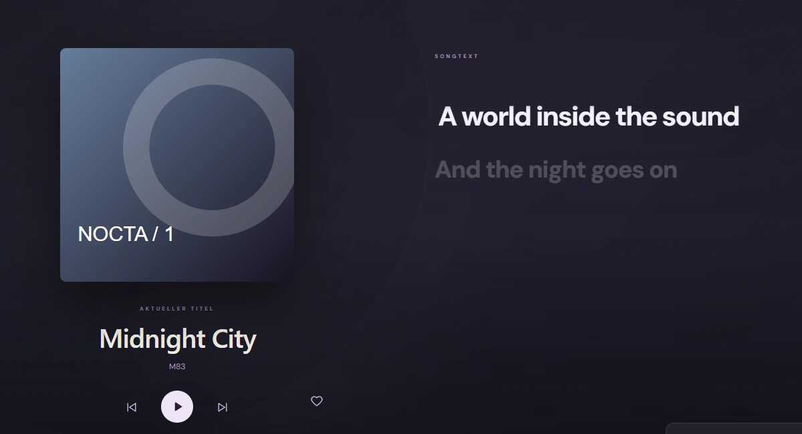
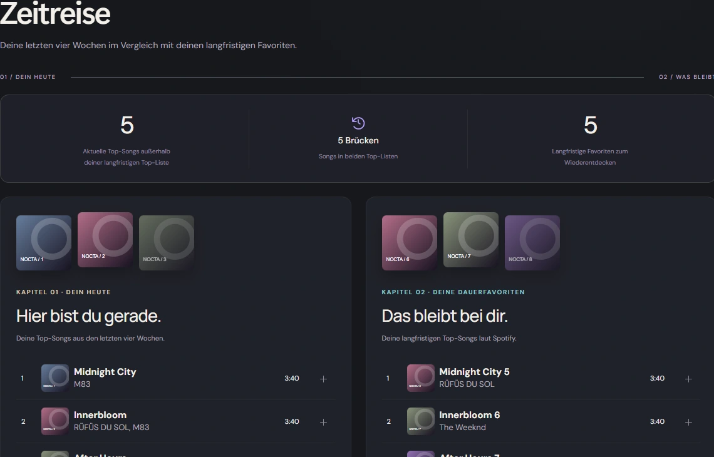

Sound-DNA
So klingt dein Geschmack.
Deine Top-Künstler und Songs, als persönliche Signatur. Verfügbare Genre-Daten ergänzen deinen Überblick.
Clarg Flow, dein Sammlungsstudio und ein persönliches Hörjournal. Eine Welt, die du selbst gestaltest. Entdecke einen neuen Platz für deinen Sound.
Windows 10 / 11 · x64 · Mit deinem Spotify-Konto
Plane eigene Sessions mit Clarg Flow, stelle Songs im Sammlungsstudio zusammen und entdecke deinen Rückblick im lokalen Hörjournal. NOCTA Spaces ergänzt einen begehbaren 3D Listening Loft, Foto-Erinnerungen und deine eigene Einrichtung.
Ein Set, das mit dir weiterzieht. Clarg stellt Songs zusammen und bereitet nach sechs Titeln die nächste Richtung vor.

Raus aus dem Menü. Rein in die Musik. Eine großzügige Ansicht für Cover, Wiedergabe und Songtext – ohne die Ablenkung drumherum.

Großes Cover, klare Bedienelemente und eine ruhige Oberfläche.
Songtexte direkt im Listening Room, sofern für den Titel verfügbar.
Verlasse die Ansicht und entdecke weiter in deiner Sammlung.
Dunkel und zurückhaltend. Warm und weich. Oder ganz anders. Gestalte Farben, Menüs, Schriftfarben und Hintergründe. Speichere deine Lieblingslooks und nimm sie mit.
Finde die Künstler, die deinen Sound prägen. Entdecke Verbindungen und kehre zu Songs zurück, die geblieben sind.

Deine Top-Künstler und Songs, als persönliche Signatur. Verfügbare Genre-Daten ergänzen deinen Überblick.

Vergleiche deine letzten vier Wochen mit deinen langfristigen Favoriten und speichere deine Auswahl als private Playlist.
10-Band-Equalizer und Presets. Unter Windows mit eingerichtetem Equalizer APO.
Zeige mit Rich Presence, welchen Song du gerade in NOCTA hörst.
Nutze deine Bilder und passe Abdunklung, Position und Unschärfe an.
Warteschlange, Favoriten und Titelansicht bleiben direkt erreichbar.
Lade NOCTA für Windows herunter, verbinde deinen eigenen Spotify-Account und richte deinen persönlichen Raum ein.
NOCTA ist ein unabhängiges Projekt und kein offizielles Spotify-Produkt. Die Spotify-Anmeldung kann aktuell eine Freischaltung durch den Entwickler erfordern.
Installationsordner im Setup auswählen. Eine vorhandene Installation wird erkannt.
Dieser Build ist noch nicht digital signiert. Windows kann einen Hinweis zum unbekannten Herausgeber anzeigen.
Die wichtigsten Antworten für deinen Start mit NOCTA.
Für die Wiedergabe im integrierten Spotify-Player ist Spotify Premium erforderlich. NOCTA verwendet deinen eigenen Spotify-Account. Die API-Freigabe des Projekts begrenzt derzeit, welche Konten sich anmelden können.
Noch nicht uneingeschränkt. Die Spotify-Integration befindet sich im Entwicklungsmodus. Dein Konto muss gegebenenfalls zuerst vom Entwickler freigeschaltet werden. Der Download allein garantiert deshalb noch keinen Spotify-Zugang.
Lade die Setup-Datei herunter und öffne sie. Bei einer Neuinstallation wählst du deinen Installationsordner. Erkennt das Setup eine ältere NOCTA-Version, bietet es ein Update an. Bei gleicher oder neuerer Version kannst du die vorhandene App starten.
Die KI- und Sprachfunktionen von Clarg sowie KI-Bildbearbeitung benötigen eine passende Konfiguration und einen eigenen API-Zugang. Der Equalizer benötigt Equalizer APO am Windows-Ausgabegerät. Für Discord Rich Presence muss Discord Desktop laufen. Songtexte sind nicht für jeden Titel verfügbar.
Der angebotene Installer ist für Windows auf 64-Bit-PCs. Eine native Version für macOS, iOS oder Android wird hier derzeit nicht angeboten.
Die Screenshots zeigen die NOCTA-Oberfläche mit Beispieldaten. Deine Songs, Künstler, Statistiken und verfügbaren Inhalte hängen von deinem Spotify-Konto ab. Farben und Hintergründe kannst du selbst gestalten.